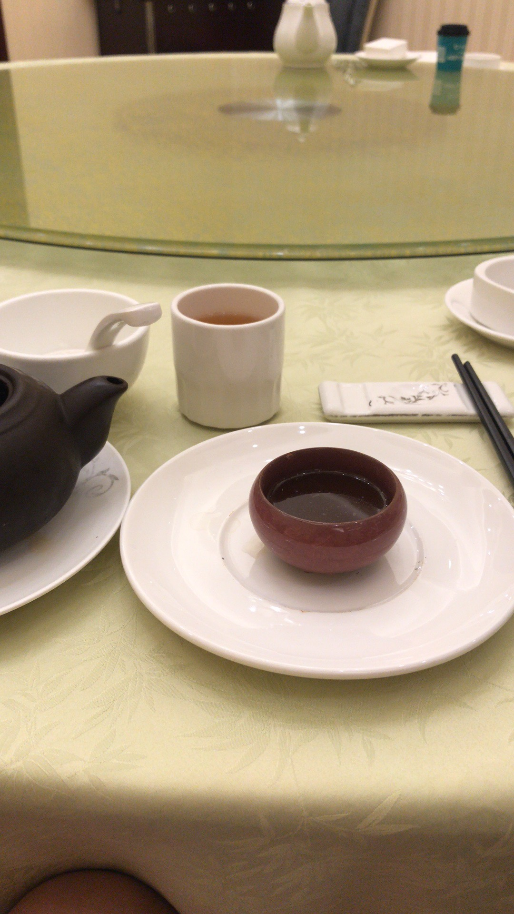
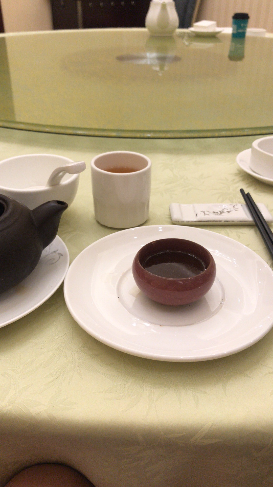

In early 2018, I went to Shanghai and Hangzhou with my friends. We went to the Shanghai art and design museum, and we joined the local volunteer organizations to be an exhibitor for the new exhibition. During the volunteer experience, I have the chance to learn and practice how to design, install, arrange a better exhibition by using user experience research methods.
The whole journey lasted eight days. One of the most memorable ones is when we talk to strangers on the train about their life experiences and exciting moments in their life. People are friendly on the train; they have their unique options about the social and political, which is very interesting to listen to. I enjoyed it when we talked about the tea culture in Asia. The guy encouraged us to try different types of tea and know about the cumbersome process and stories behind tea making.